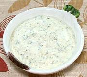

|
Green Mango Yogurt DipCalifornia, Los Angeles | ||||
| Makes: Effort: Sched: DoAhead: |
1-1/2 cups ** 45 min Yes |
This dip adheres well and is great with cruidités. Its interesting and unusual flavors will make your dip unique. Here in the "Capital of the Pacific Rim", we use flavors from far away. It's simply our Indian Green Mango Chutney mixed with Yogurt. | |||
|
1/2 1 |
c c |
Green Mango Chutney (1) Yogurt, Plain Natural (2) |
Do Ahead - (37 min)
|